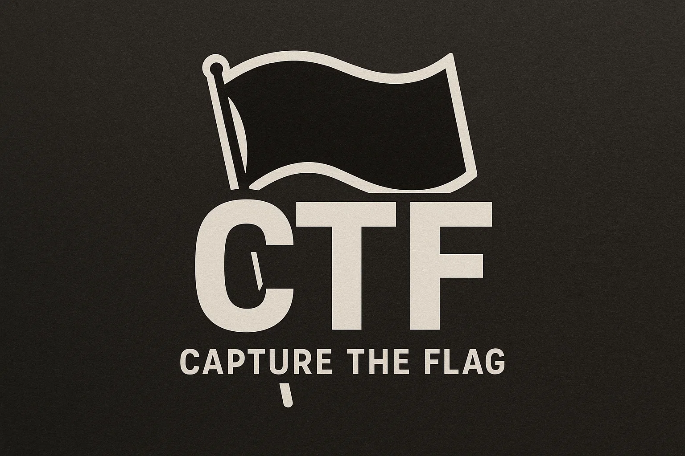
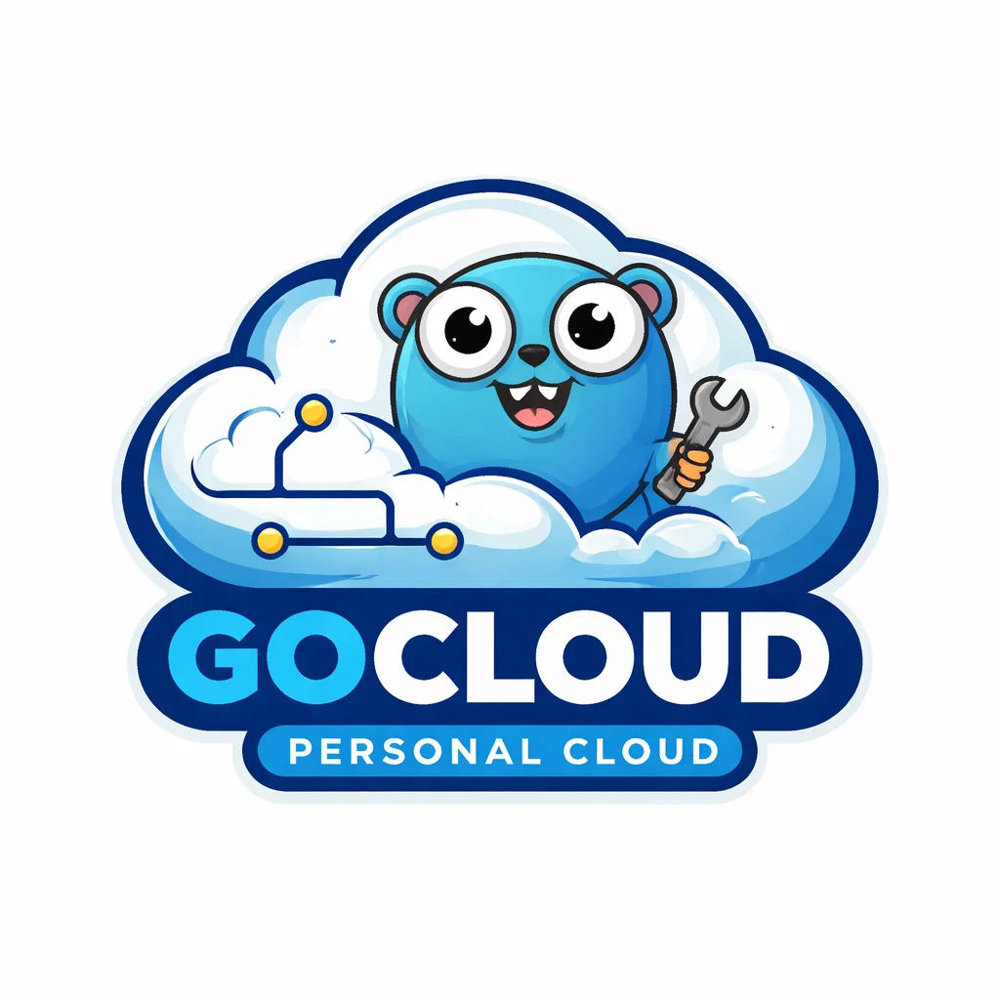

Ynov B1
Projet_Red : Eldoria
Ce projet a été créé dans le cadre de mes études à Ynov Campus lors de ma première année (B1). Il a été réalisé en une semaine en Golang.
Voir le projet sur GitHubÀ Bordeaux, en 2ᵉ année à Ynov. Je cherche une alternance en développement web à partir de [À PRÉCISER].

Je construis des applications web en entier, de l’écran jusqu’au serveur qui les fait tourner.
J’ai commencé par les réseaux et la sécurité en bac pro SN, mention très bien. Depuis, je code pour le web, et je mets en ligne ce que je fais.
Ce site, je l’ai fait de bout en bout :
J’ai commencé par les réseaux et la cybersécurité en bac pro. Aujourd’hui je code surtout pour le web, du navigateur jusqu’au serveur. Ce site tourne sur une machine que j’administre : React pour l’interface, une API Express, PostgreSQL, le tout dans Docker derrière Nginx et Cloudflare. J’en modifie le contenu depuis un back-office que j’ai aussi développé.
Mes premiers pas en informatique
Support et matériel informatique
Développement web
Étudiant en informatique
Ynov B1
Ce projet a été créé dans le cadre de mes études à Ynov Campus lors de ma première année (B1). Il a été réalisé en une semaine en Golang.
Voir le projet sur GitHub
Bac Pro SN
J’ai eu 4 semaines pour coder un logiciel en Python pour la reconnaissance faciale sur photos, vidéos et webcam en direct.
Voir le projet sur GitHub
2025
J’ai participé au CTF 2025 sur le site Root Me, organisé par cette même plateforme.
Voir le projet sur GitHub
Projet perso
Fan game basé sur l’univers de One Piece. Le but est de trouver un personnage précis parmi 250, comme un Geoguessr pour les personnages.
Voir le site
Projet perso
Projet personnel full Golang web avec communication base de données, hébergé sur NAS/Raspberry Pi.
Voir le projet sur GitHubYdays
Plateforme de podcasts créés par des étudiants pour des étudiants sur la tech et l’impact de l’IA sur nos métiers.
Voir le projet sur GitHubLe plus simple est de m’écrire. Mon CV et mes profils sont juste en dessous.
M’écrire